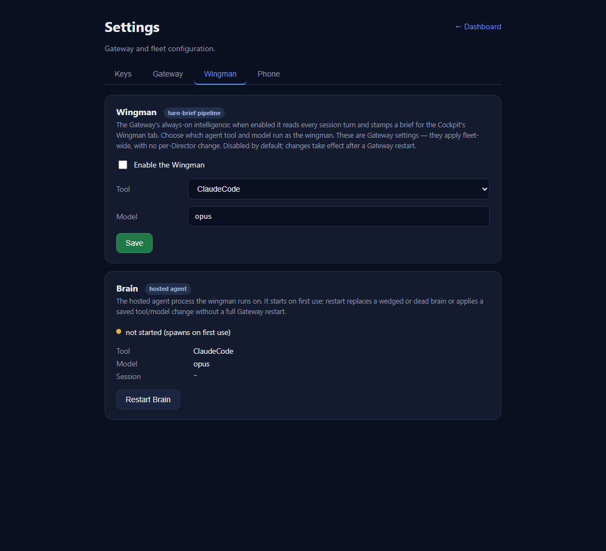
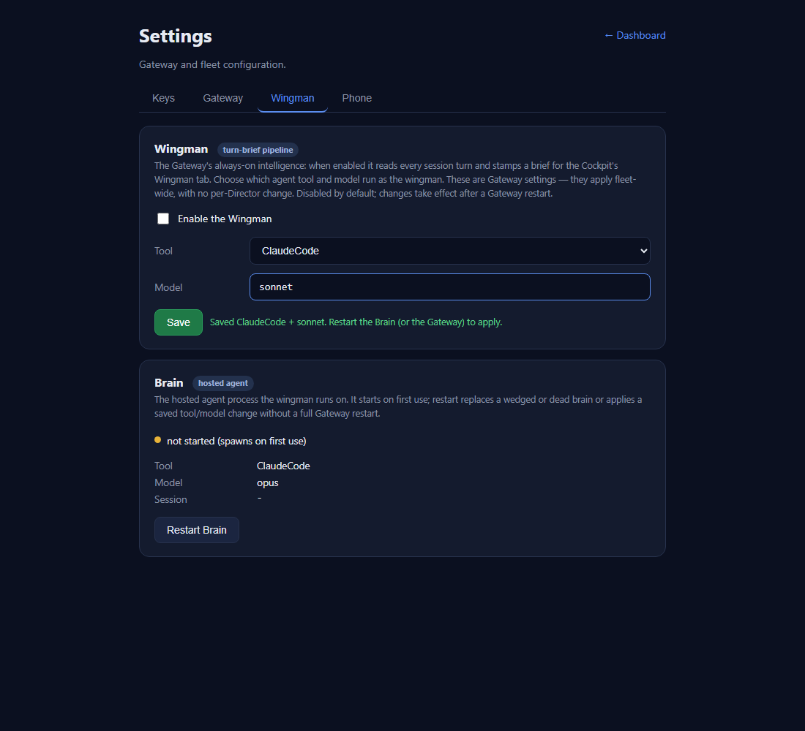

Independent QA verification (CenCon Development Method, cc-director). PR #409, branch
issue-393-wingman-gateway-tool-model. Verified in a fresh QA worktree, on a clean build,
against a real GatewayHost booted from the PR build on an isolated CC_DIRECTOR_ROOT
and a separate test slot (slot 8) - the developer's binary and screenshots were NOT reused.
Build succeeded. 0 Warning(s), 0 Error(s)),
ran the change's unit + endpoint tests myself, then booted a real GatewayHost from the PR
build on a free loopback port with CC_DIRECTOR_ROOT pointed at a throwaway temp root (so the
user's real config.json and the production Gateway on 7878 were never touched). I drove the live REST
endpoints with curl, inspected the on-disk gateway config.json by hand, restarted
the Gateway against the persisted config to confirm the chosen tool+model are applied, and rendered the
real settings.html with its real page JS (served over HTTP, gateway responses matching the
live shapes I captured) to screenshot the Wingman tab.
| # | Criterion | How I verified (my own proof) | Result |
|---|---|---|---|
| 1 | Cockpit gateway settings shows a Wingman section with enable toggle, tool selector, model selector | Rendered the real settings.html + page JS over HTTP, clicked the Wingman tab,
screenshotted. DOM probe: enable toggle present and enabled; tool <select>
populated [ClaudeCode] and enabled; model field pre-filled opus and
enabled; Save enabled. See qa-wingman-default.png. |
PASS |
| 2 | Selecting a tool + model and saving persists the choice on the Gateway (GET returns saved values / config shows them) | Live PUT /gateway/brain/config {"tool":"ClaudeCode","model":"sonnet"} echoed
{tool,model}; the gateway-side config.json on disk then contained
"brain_tool":"ClaudeCode","brain_model":"sonnet". Also covered by
BrainConfigEndpointTests (6/6 passed). |
PASS |
| 3 | After saving and a brain (re)start, the brain launches the chosen tool with the chosen model | Stopped the Gateway and re-constructed a fresh GatewayHost against the persisted
config (the "restart"): BrainTool=ClaudeCode, BrainModel=sonnet on the host
properties used to build the BrainSupervisor/HostedAgent +
AgentArgs=...--model sonnet, and the live GET /gateway/settings brain
block returned tool=ClaudeCode, model=sonnet. Code path also logs
[GatewayHost] brain tool: {tool}, model: {model}. |
PASS |
| 4 | When nothing is chosen, the default matches today's behavior (claude + opus) | Fresh empty config: GatewayHost.BrainTool=ClaudeCode, BrainModel=opus;
live GET /gateway/settings -> brain.tool=ClaudeCode, brain.model=opus,
brain.tools=[ClaudeCode]. Also BrainToolConfigTests default cases (11/11). |
PASS |
| 5 | The setting lives at the Gateway level (no Director config edit; fleet-wide) | Persisted to the gateway-machine config.json via PUT /gateway/brain/config
(a Gateway endpoint); no Director Control API or Director config involved. The Director on slot 8
(port 7887) does not serve /gateway/* at all - confirming the surface is the Gateway,
not a per-Director setting. |
PASS |
| 6 | Disabling the wingman via the toggle stops new briefs from being generated | Live toggle round-trip: PUT /gateway/wingman {"enabled":false} wrote
"wingman_enabled":false to config.json (and true on enable). Code gate
at GatewayHost.cs:239: if (!GatewayTurnBriefAgent.Disabled) - when
disabled (!WingmanConfig.Get()), the _briefAgent is never created, so no
new turn briefs are stamped (applied on the next Gateway restart, the documented behavior). |
PASS |
PUT /gateway/brain/config {"tool":"Pi","model":"opus"} -> HTTP 400 {"error":"tool must be a brain-hostable agent tool (one of: ClaudeCode)"}
PUT /gateway/brain/config {"tool":"Bogus","model":"opus"} -> HTTP 400 {"error":"tool must be a brain-hostable agent tool (one of: ClaudeCode)"}
PUT /gateway/brain/config {"tool":"ClaudeCode","model":""} -> HTTP 400 {"error":"model is required (a model alias or id)"}
Invalid / non-hostable tools and a blank model are rejected with clear errors - no silent fallback. Matches CLAUDE.md no-fallback rule.
=== Defaults (empty config) ===
GatewayHost.BrainTool=ClaudeCode GatewayHost.BrainModel=opus
GET /gateway/settings brain block: { "tool":"ClaudeCode", "tools":["ClaudeCode"], "model":"opus", ... }
=== After PUT tool=ClaudeCode model=sonnet ===
config.json on disk: { "brain_tool": "ClaudeCode", "brain_model": "sonnet" }
=== After Gateway restart against persisted config ===
GatewayHost.BrainTool=ClaudeCode GatewayHost.BrainModel=sonnet
GET /gateway/settings brain block: tool=ClaudeCode model=sonnet tools=[ClaudeCode]
=== Wingman toggle persistence ===
PUT /gateway/wingman {"enabled":true} -> config.json { "wingman_enabled": true }
PUT /gateway/wingman {"enabled":false} -> config.json { "wingman_enabled": false }
BrainToolConfigTests - 11 passed / 0 failed.BrainConfigEndpointTests (end-to-end against a real GatewayHost over HTTP) - 6 passed / 0 failed.CcDirector.Core.Tests - 1895 passed, 2 skipped, 0 failed.CcDirector.Gateway.Tests - 622 passed, 1 failed.Build succeeded. 0 Warning(s), 0 Error(s).DictationEndpointTests.FullPipeline_transcribes_phase0_clip2_with_realtime_provider failed with
"expected at least 1 partial transcript, got 0". I read the test: it is a REAL-NETWORK integration test
that early-returns (skips) unless OPENAI_API_KEY, ffmpeg, and the audio clip are all present
(if (!HasOpenAiKey()) return;). It only executed because this machine has those, and it then
hit OpenAI's live realtime transcription provider, which streamed no partial frames during this run - a
provider/network/timing condition, not a code fault. It touches dictation/transcription only - ZERO
overlap with this PR's changed files (brain/wingman/settings/config). It is therefore an environment-
dependent flaky external-service test, unrelated to issue #393.
config.json
and the existing Cockpit Settings page. No architecture/security drift; no docs/cencon/
update required.Wingman tab, defaults (enable toggle, Tool=ClaudeCode selector, Model=opus, Save; Brain runtime section):

Model changed to sonnet, save confirmation "Saved ClaudeCode + sonnet. Restart the Brain (or the Gateway) to apply.":

VERIFIED - all 6 acceptance criteria met. The single failing Gateway test is a pre-existing, environment-dependent live-provider test unrelated to this change. PASS - approved for squash-merge to main.